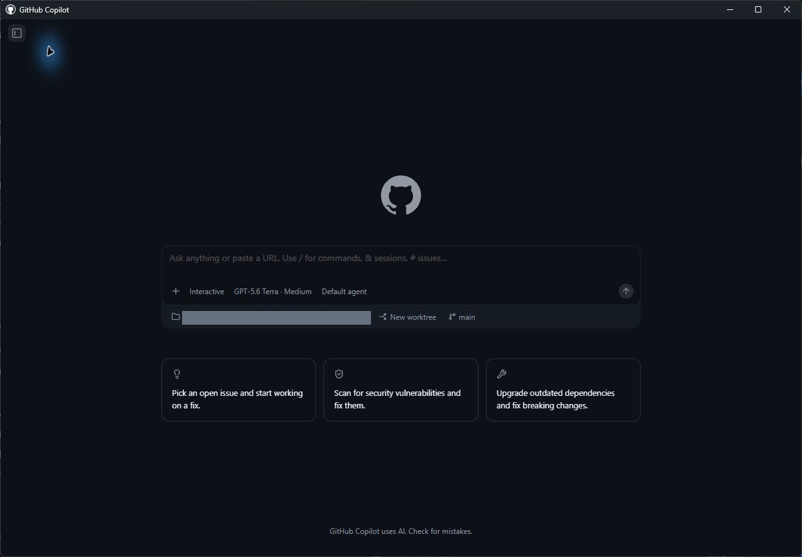
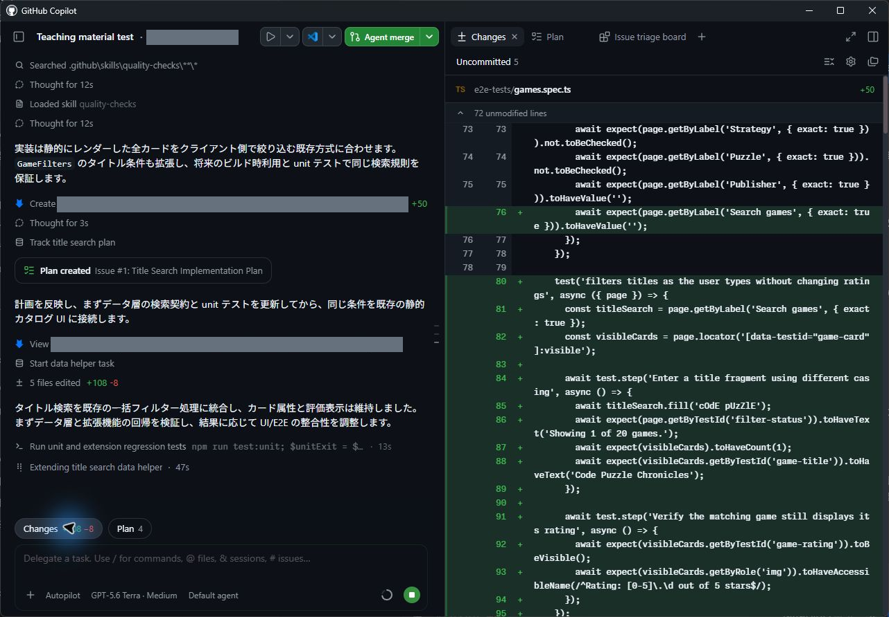
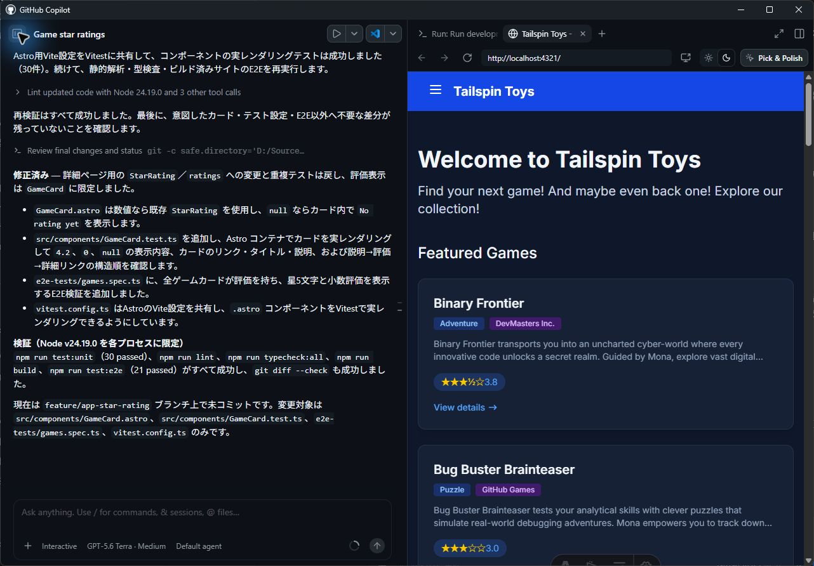
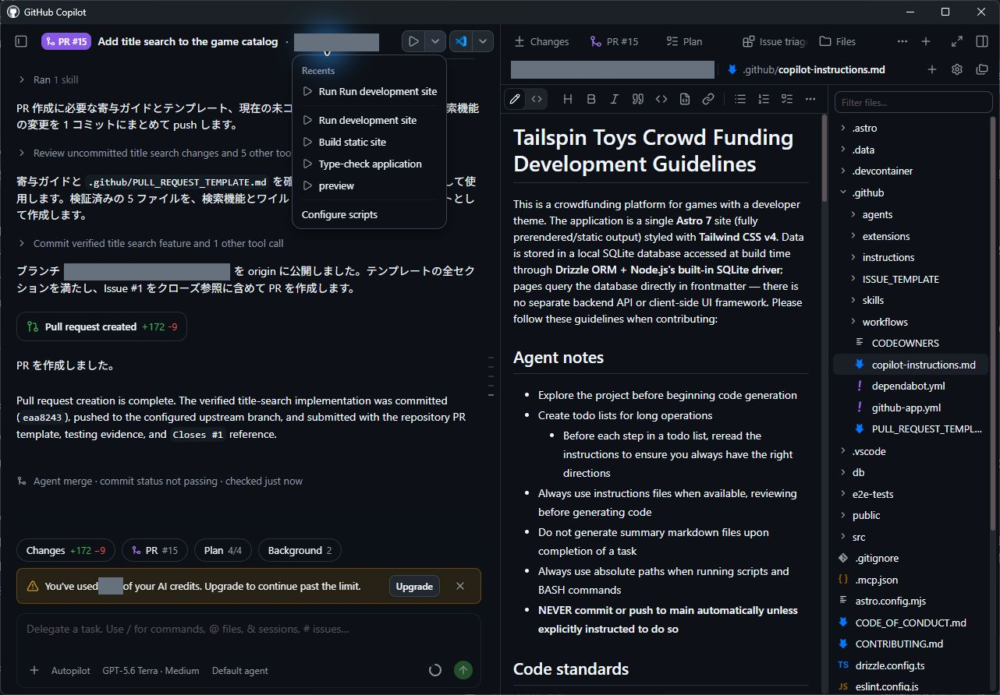

この章の進め方： App で操作します。掲載画像には確認日・バージョン・操作例の対象を添えています。撮影範囲全体を残しているため、会話欄と操作パネルの位置関係を合わせて確認できます。ボタンや機能が見つからない場合は UI が異なるときの確認に沿って講師と確認してください。
前のレッスンでは、ワークスペースの確認とクイックチャットの利用を行いました。本章では、いよいよエージェントセッションを開始し、プロジェクトに最初の変更を加えます。
今回の変更は小規模なものに留めます。ゲームのデータ構造にはすでに星評価が含まれていますが、ホームページのゲームカードにはまだ表示されていません。そこでエージェントにカードへの評価表示を依頼し、生成された変更をレビューしたうえで、最初の pull request としてマージする一連の流れを体験します。
このレッスンでは、次の内容を学習します。
- エージェントセッションを開始し、その構成要素を理解する
- プロジェクトに対し、小規模で対象を絞った変更を加えるようエージェントへ依頼する
- ワークスペースの差分ビュー（Changes）で変更内容をレビューする
- アプリをローカルで実行し、ブラウザー上で変更結果を確認する
- 最初の pull request を作成してマージする
シナリオ
Tailspin Toys の各ゲームには星評価のデータが保持されており、ゲーム詳細ページにはすでに表示されています。一方、ホームページの一覧カードにはタイトル、カテゴリー、パブリッシャー、説明文のみが表示されており、星評価は含まれていません。
そこで、最初のエージェントセッションの準備運動として、ホームページの各カードにも既存の星評価を表示するようエージェントに依頼します。対象が絞られており自己完結しているため、エージェントとの最初の共同作業として最適な課題です。
セッションの構造
セッションとは、特定のプロジェクトを対象としてエージェントと対話を行う作業空間です。サイドバーのプロジェクト一覧から起動できます。
注意 作業ディレクトリとブランチの確認： すべてのセッションが自動的に独立環境へ分離されるとは限りません。2026年9月13日の Windows App 1.1.20 実機検証では、Open folder で追加したプロジェクトの読み取りセッションは既存の checkout を直接参照し、専用の worktree は作成されませんでした。 - コード編集を始める前に、作業ディレクトリと現在のブランチを必ず確認する - 同一の checkout を共有する複数セッションで同時に編集を行わない
各セッションの画面は、主に次の 3 つの要素で構成されています。 1. 会話（Chat）：エージェントに対する指示や対話のログ 2. ツールアクティビティ（Tool Activity）：ファイルの調査や編集時にエージェントが実行した操作履歴 3. 変更済みファイル（Changes）：差分（diff）付きで確認できる変更ファイル一覧
セッションを開始して変更を依頼する
新しいセッションを開始し、プロジェクトの調査と機能の実装を進めましょう。前のレッスン で GitHub リポジトリから追加した演習用プロジェクトを選択し、変更を依頼します。
- GitHub Copilot app を開きます（起動済みの場合はそのまま進めます）。
- サイドバーの Projects で、演習用プロジェクトの横にある
+（New session in …）を選択します（Windows App 1.1.20 でこの操作導線を確認済みです）。 - New 画面の入力欄下部に、自分の演習用プロジェクト名が表示されていることを確認します（各自のリポジトリ名が表示されていれば問題ありません）。

実機撮影：2026-09-13、Windows、GitHub Copilot App 1.1.20。撮影範囲全体を掲載（切り抜きなし）。灰色の箇所はアカウント・検証用リポジトリ・ローカルパス等の識別情報や個人の利用量をマスク。New 画面。入力欄とモデル・リポジトリ・New worktree・main の位置。送信前。
- 次のプロンプトを入力し、変更を依頼します。
ゲームカードに各ゲームの星評価を表示してください。Game 型には starRating があり、5点満点の数値、または未評価を示す null が入ります。src/components/GameCard.astro の各カードに表示し、null の場合は「No rating yet」と表示してください。変更は小さく保ち、カードの構造は組み替えないでください。補足 プロンプト内で更新対象ファイル（
src/components/GameCard.astro）を指定している点に注目してください。ファイルの指定は必須ではありませんが、あらかじめ方向性を示すことで、エージェントが意図通りのコードをすばやく生成し、トークン消費量も削減できます。
- Enter キーを押して、プロンプトを送信します。
セッション開始後、エージェントがコードベースを調査し、星評価の表示に必要な修正を加えます。なお、エージェントの完了報告テキストだけを鵜呑みにせず、必ず次の手順で実際の差分とテスト結果を自ら確認しましょう。
差分をレビューする
AI が生成した変更は、どれほど小さく見えても、マージ前に人間の目でレビューする必要があります。Copilot app の機能を使って差分を確認しましょう。
- 会話入力欄の上部にある Changes（Open changes）を選択します。Windows App 1.1.20 では右側のパネルに Changes が開き、変更されたファイル数とコード差分が表示されます（パネルの開閉は右上の Toggle panel で切り替えられます）。

実機撮影：2026-09-13、Windows、GitHub Copilot App 1.1.20。撮影範囲全体を掲載（切り抜きなし）。灰色の箇所はアカウント・検証用リポジトリ・ローカルパス等の識別情報や個人の利用量をマスク。会話欄の Changes と右側の差分パネル。表示コードは追加検証の検索機能で、各章の変更内容とは異なる。
- ゲームカードの描画を担う主要ファイル
src/components/GameCard.astroにコードが追加されていることを確認します。通常は次のように、評価がある場合は数値を表示し、starRatingがnullの場合は "No rating yet" を表示する小さなブロックが追加されます。
{game.starRating !== null ? (
<span class="text-xs font-medium px-2.5 py-0.5 rounded bg-amber-900/60 text-amber-300" data-testid="game-rating">
★ {game.starRating} / 5
</span>
) : (
<span class="text-xs font-medium text-slate-500" data-testid="game-rating-empty">
No rating yet
</span>
)}補足 すべての生成 AI ツールと同様に、Copilot の出力は確率的に変動するため、生成されるコードの細部は上記と完全に一致しない場合があります。ただし、全体のロジックは同等のものになります。
変更を確認する
生成されたコードを目視で確認するだけでなく、App の Run メニューから開発サーバーを起動し、ブラウザー上で実際の表示を確認します。
補足 確認済みの起動経路（Windows App 1.1.20）：
.github/github-app.ymlが適用されたセッションの Run メニューを使用します。メニューに実行項目が表示されない場合は、演習用コピーの設定内容と適用状態を講師と一緒に確認してください。

実機撮影：2026-09-13、Windows、GitHub Copilot App 1.1.20。ローカルプロジェクトの星評価実装・検証報告と Browser パネルの表示。サーバー停止後の表示を保持した画面。PR・マージ前。
2026年9月13日の実機検証では、次の内容を確認しています。
- 実装内容：既存の StarRating コンポーネントを再利用し、null の場合のみ No rating yet を表示。アクセシビリティ対応として Rating: X out of 5 stars の読み上げラベル（アクセシブルネーム）を付与。
- テスト検証：境界値（4.2、0、null）とリンク構造をテストし、単体テスト 30 件、E2E テスト 21 件、lint、型検査のすべてがパス。
- PR 作成とマージ：検証用 PR #9 では、エージェントが gh コマンド経由で作成し、CI の全 4 ジョブが通過。その後、App 内の「My work」→「PR #9」→「Ready to merge」→「Merge pull request」を通じて通常マージが完了し、次章の新規 worktree へ星評価の変更が正常に引き継がれました（※当時 App 組み込みの PR 作成ツールはアカウント連携エラーとなったため、UI の Create PR 経路の成功例としては計上していません。詳細は 実走記録 を参照）。
開発サーバーの起動と停止手順
- セッション上部の Run options から Run development site を選択します。 - ボタンが Run Run development site と表示されている場合は、クリックして起動します。 - すでに Stop Run development site と表示されている場合は稼働中ですので、そのまま次の手順へ進んでください。

実機撮影：2026-09-13、Windows、GitHub Copilot App 1.1.20。撮影範囲全体を掲載（切り抜きなし）。灰色の箇所はアカウント・検証用リポジトリ・ローカルパス等の識別情報や個人の利用量をマスク。Run メニューの Run development site・Build static site・Type-check application。選択後に Run ボタンで起動する。検索機能 PR 作成後の操作例。
- サーバーが起動したら、Browser パネルに表示されるローカル URL を確認します（実走環境では
http://localhost:4321/が自動表示されました）。 - トップページの各ゲームカードに、星評価が正しく表示されていることを確認します（未評価データの表示も確認してください）。
- 確認後、セッション上部の Stop Run development site を選択してサーバーを停止します。 （※停止後も Browser パネルに直前の画面が残る場合がありますが、残像を稼働中の証拠と見なさないよう注意してください）
ヒント App 内で組み込みターミナルを開く場合は、Toggle panel →
+（Add tab）→ Terminal からアクセスできます（この導線は実機確認済みです。ただし、ターミナルから直接コマンド入力してサーバーを起動する手順は、本章の標準実走手順には含めていません）。
最初の pull request を作成してマージする
動作確認が完了したので、コードをリポジトリへ反映します。エージェントに pull request の作成を依頼し、自身でレビューを行ったうえでマージを実施します。本章では手動マージを行いますが、後続レッスンでは自律処理させる方法も体験します。
補足 実機で確認した PR 経路（Windows App 1.1.20）： GitHub 連携セッションでは、次章の PR #10 において Create PR ボタンによる作成が成功しました。作成後は My work → 対象 PR → Changes から差分を確認でき、Ready to merge 画面で CI チェック結果、未解決コメント、マージ方法の選択肢を確認できます。なお、ローカルフォルダー経由（Open folder）では組み込み PR 作成が失敗したため、接続形態の違いによる挙動差にご留意ください。
- 画面右上にある Create PR を選択します。
- ブラウザー認証を求められた場合は、Sign in with your browser を選択し、画面の指示に従って認証します。
- Copilot が pull request の作成処理を開始します。
- PR 作成後、Copilot はリポジトリ上の CI ワークフローを監視します。ジョブが正常に完了すると、右上のボタンが Ready to merge に変化します。
- チャット欄のすぐ上にある PR バブルを選択し、レビューペインで pull request の内容を最終確認します。
- 確認後、Ready to merge を選択します。
- ダイアログウィンドウで Merge pull request を選択し、main ブランチへマージします。
これで、最初の機能追加が Web サイトへ正常に反映されました。
注意 講師向け緊急対応： 参加者の環境でトラブルが生じ、緊急に作業を保全する必要がある場合のみ 講師専用 CLI 対応手順 を参照してください。なお、CLI 側で実装が完了しても、本章における App 操作の完了実績とは見なしません。
まとめと次のステップ
最初のエージェントセッションを開始し、最初の変更を無事にリリースできました。 - エージェントセッションを開始し、画面構成と作業ディレクトリの扱いを理解した - ゲームカードに小規模で対象を絞った変更を加えるようエージェントへ指示した - 差分ビュー（Changes）でコードの変更内容をレビューした - アプリをローカル開発サーバーで起動し、ブラウザー上で星評価の表示を確認した - pull request を作成し、CI 完了を確認したうえで手動マージを行った
次は、エージェントの一貫したコーディング品質を保つため、リポジトリにカスタム指示（Custom Instructions）の標準ルールを追加します。バックログの Issue を起点として進めましょう。レッスン 3「カスタム指示による Copilot のガイド」 へ進んでください。